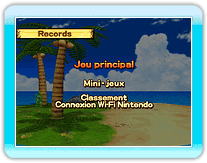

11 |
Records |
 |
|
Lorsque vous sélectionnez « Records », trois options vous sont proposées :
« Jeu principal », « Mini- jeux » et « Classement Connexion Wi-Fi Nintendo ». ● Jeu principal
● Mini-jeux
● Classement Connexion Wi-Fi Nintendo *Vous devez posséder des données sauvegardées pour vous inscrire au classement Connexion Wi-Fi Nintendo.
Les records atteints sont d'abord ajoutés au classement local, dans la mémoire de la console Wii. Vous pouvez ensuite choisir de les enregistrer au classement Connexion Wi-Fi Nintendo.
Pour ce faire, sélectionnez « Entrée » sur la liste des records d'un mini-jeu ou du jeu principal.
Pour afficher les records enregistrés au classement Connexion Wi-Fi Nintendo, sélectionnez « Classement Connexion Wi-Fi Nintendo ».
Lorsque vous sélectionnez le type de classement à afficher, les 30 premiers apparaissent pour chaque catégorie, incluant votre propre rang. Sélectionnez « Rafraîchir » sur cet écran pour mettre à jour la catégorie de classement actuellement affichée.
*La mise à jour du classement peut prendre du temps ; elle n'est pas possible dans certaines situations.
|
 |
 |
 |